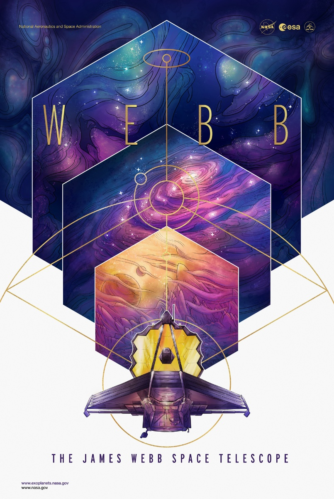

Introducción: El Telescopio Espacial James Webb

La ingeniería aeroespacial supone, hoy en día, uno de los campos de investigación y desarrollo más importantes a nivel global estableciendo interconexiones entre muchas de las tecnologías actuales, desde la robótica a la electrónica pasando por la física. Toda esta tecnología requiere del esfuerzo conjunto de muchas personas, hombres y mujeres, a las que se les reconoce su labor y esfuerzo gracias no solo a las posibilidades de investigación que brindan si no a cómo son capaces de trasladar toda esa tecnología al MundoRealTM; aplicaciones como el Teflón o el Velcro son el fruto del desarrollo de la investigación aeroespacial.
Uno de los últimos ejemplos es el Telescopio Espacial James Webb (NASA). El telescopio espacial James Webb, una colaboración entre la National Aeronautics and Space Administration NASA, la Agencia Espacial Europea ESA y la Canadian Space Agency CSA además de ser una auténtica maravilla tecnológica ha batido (y batirá) todos los récords en cuanto a astrofísica espacial se refiere. El James Webb es el telescopio espacial más grande y complejo jamás construido, podrá recolectar luz que ha estado viajando durante 13500 millones de años, casi desde el comienzo del universo.
Dado que toda la luz que nos llega en el presente de cada punto del universo es la luz que dicho punto emitió en un pasado más o menos lejano dependiendo de su distancia a la Tierra, podemos afirmar que el James Webb es una máquina del tiempo que nos permitirá observar desde las primeras galaxias que se formaron después del “Big Bang” y transportarnos hasta el lugar donde nacen las estrellas para poder estudiarlas. Las esperanzas puestas en el JWST son tantas que hay quienes afirman que nos permitirá hacer una ciencia totalmente nueva y llevarnos mucho más lejos en nuestro conocimiento del cosmos.
Con este recurso aprenderemos que para hacer astrofísica podemos valernos de "luces" no visibles para el ojo humano. De hecho el JWST se sirve de la luz infrarroja para adquirir imágenes. Recoger la luz infrarroja nos permitirá ver directamente a través de las gigantescas nubes de polvo que bloquean la vista de la mayoría de los otros telescopios.
De entre todos los telescopios espaciales que orbitan alrededor de la Tierra, el Telescopio Espacial Hubble es, sin duda alguna, el más famoso. De acuerdo con las capacidades, el James Webb será 100 veces más poderoso que el telescopio espacial Hubble. En particular, una vez que despliegue su conjunto de 18 espejos hexagonales segmentados el espejo primario del Webb tendrá un diámetro de 6.5 metros frente a los 2.4 metros del Hubble. Este descomunal espejo, el más grande puesto en órbita hasta la fecha, será lo suficientemente potente como para permitir al James Webb buscar vapor de agua en las atmósferas de los planetas que orbitan otras estrellas y descubrirnos la composición de sus atmósferas, desvelarnos algunos de los secretos que aún esconde la teoría de la relatividad de Einstein y complementar las medidas que haga LISA una vez este nuevo observatorio en el espacio, diseñado para hacer astrofísica a partir de las llamadas ondas gravitacionales, se ponga en órbita.